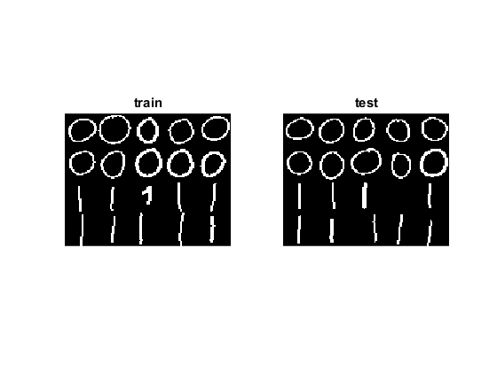

Logistic Regression
The file data01.xml contains digits 0 and 1 of 20 samples each, collected on an Android device. Each of the collected images are of size 28 x 28 re-arranged to 1 x 784 matrix.
Sources:
Contents
Dataset
download data
dsFile = fullfile(mexopencv.root(), 'test', 'data01.xml'); if exist(dsFile, 'file') ~= 2 disp('Download dataset...'); url = 'https://cdn.rawgit.com/opencv/opencv/3.2.0/samples/data/data01.xml'; urlwrite(url, dsFile); end
load data
disp('Loading the dataset...'); S = cv.FileStorage(dsFile); data = single(S.datamat); labels = int32(S.labelsmat); fprintf('%d rows of data\n', size(data,1));
Loading the dataset... 40 rows of data
split intro train/test sets
data_train = data(1:2:end,:); data_test = data(2:2:end,:); labels_train = labels(1:2:end); labels_test = labels(2:2:end); fprintf('training/testing samples count: %d / %d\n', ... size(data_train,1), size(data_test,1));
training/testing samples count: 20 / 20
display sample image
if mexopencv.require('images') % MONTAGE showImage = @(data) montage(reshape(data', 28, 28, 1, [])); subplot(121), showImage(data_train), title('train') subplot(122), showImage(data_test), title('test') end
Classification
simple case with batch gradient
lr = cv.LogisticRegression(); lr.LearningRate = 0.001; lr.Iterations = 10; lr.Regularization = 'L2'; lr.TrainMethod = 'Batch'; lr.MiniBatchSize = 1; fprintf('training... '); tic lr.train(data_train, labels_train); toc fprintf('predicting... '); tic responses = lr.predict(data_test); toc
training... Elapsed time is 0.048445 seconds. predicting... Elapsed time is 0.004559 seconds.
Prediction
show prediction report
disp('original vs predicted:'); disp([labels_test(:) responses(:)]); if ~mexopencv.isOctave() && mexopencv.require('stats') %HACK: CONFUSIONMAT not implemented in Octave cm = confusionmat(labels_test, responses); disp('confusion matrix'); display(cm); end acc = 100 * nnz(labels_test == responses) / size(responses,1); fprintf('accuracy: %.2f%%\n', acc);
original vs predicted:
0 0
0 0
0 0
0 0
0 0
0 0
0 0
0 0
0 0
0 0
1 1
1 1
1 1
1 1
1 1
1 1
1 1
1 0
1 1
1 1
confusion matrix
cm =
10 0
1 9
accuracy: 95.00%
save the classfier
fname = fullfile(tempdir(),'NewLR_Trained.xml'); lr.save(fname); disp(['classifier saved to: ' fname]);
classifier saved to: C:\Users\Amro\AppData\Local\Temp\NewLR_Trained.xml